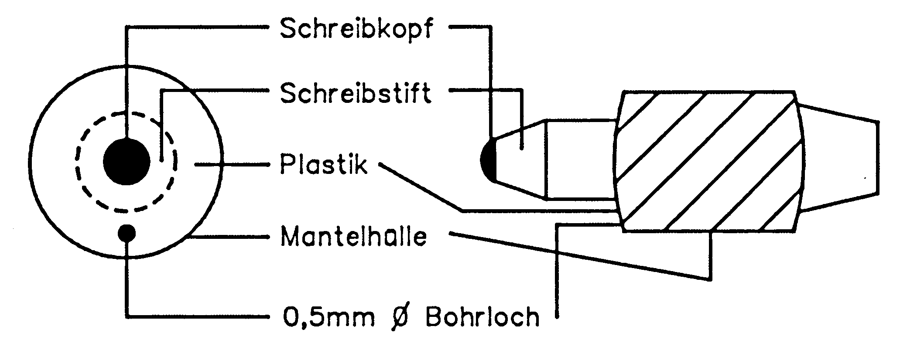

Die Axt im Haus... (Teil 6)
Die Palette wertvoller Reparaturtips steht in dieser Folge im Zeichen der Erfahrungen unserer Leser, die wir an Sie weitergeben wollen.
In dieser Folge berichten Leser von Reparaturerfahrungen, die sie mit ihrer Computer-Anlage im Laufe der Zeit sammeln konnten. Dazu gehört der C 64 genauso wie die Floppystation 1541 oder der Plotter 1520.
Wärme-Defekte bei RAM-Bausteinen
Manche Programme stürzen, nachdem sie einige Zeit fehlerfrei arbeiten, plötzlich ab. Es stellt sich dann die Frage, ob die Ursache des Aussteigens programm- oder computerbedingt ist. Eine in Frage kommende Möglichkeit wäre die, daß Teile des Speichers entweder defekt sind oder daß sich der Inhalt einiger Speicherzellen durch Wärme oder andere Einflüsse geändert hat. Zwar wird beim Einschalten des Computers ein Speichertest durchgeführt, aber nur etwa 60 Prozent des Speichers werden überprüft.
Dieses Programm (Listing 1) schafft die Möglichkeit, die gesamten 64 KByte RAM über einen beliebigen Zeitraum auf einwandfreie Funktion zu testen. Wer also seinem Computer nicht traut, sollte dieses Programm für ein paar Stunden oder über Nacht laufen lassen.
Zur Funktion des Programms:
Von den 256 Speicherseiten mit je 256 Speicherstellen werden zunächst die Speicherseiten 0 und 1 getestet, danach die Seiten 2 bis 159. Damit wäre der in Basic erreichbare Speicher getestet. Nun kopiert sich ein Teil des bei $C000 liegenden Programms nach $9000, das verdeckte RAM wird eingeblendet und die Seiten 160 bis 255 getestet. Anschließend startet der Test von vorn. In der unteren Bildschirmzeile ist die Adresse der gerade getesteten Speicherzelle sichtbar. Wird ein Fehler festgestellt, scrollt der Bildschirminhalt nach oben, so daß die Adressen der defekten Speicherstellen angezeigt werden können. Das Scrollen des Bildschirms kann durch <SHIFT> oder <SHIFT LOCK> angehalten werden.
Die oberste Bildschirmzeile zeigt die Anzahl der Testdurchläufe sowie die Summe der Fehler an. Ein Testdurchlauf entspricht einem kompletten Speichertest.
Das Programm kann nach dem Starten nur durch einen Reset oder durch Ausschalten unterbrochen werden. Deshalb sollte man es vor dem Start unbedingt speichern. Der Programmstart erfolgt mit SYS 49152. Wenn das Programm trotz fehlerfreier Eingabe nicht arbeitet, besteht der Verdacht, daß der Speicherbereich von $C000 bis $C2BB oder von $9000 bis $9047 defekt ist.
Was das Beseitigen eines eventuell festgestellten Fehlers betrifft, kann ich aus eigener Erfahrung nur folgende Ratschläge geben: Eingesteckte Module entfernen. Ist der Fehler beseitigt, sind die Kontakte des Expansion-Ports zu überprüfen. Durch schlechten Kontakt eines in meinem Computer eingesteckten Moduls hat sich der Speicher ab $C000 abgeschaltet! Bei meinem VC 20 hingegen war es ein wärmebedingter Fehler. In diesem Fall kann der Bastler mit Kältespray den defekten RAM-Baustein finden. Anmerkung:
Vor Eingabe des SYS-Befehls kann mit POKE 49607,161 zum Testen des Programms ein Defekt von 256 Speicherzellen simuliert werden.
(Jörg Materna/dm)Bildausfall am Monitor
Als Fehler trat bei mir ein Bildausfall am angeschlossenen Monitor auf. Durch Bewegen des Kabels konnte ich einen Kabelbruch am Cinch-Stecker feststellen. Der Fehler wurde behoben, indem ich den eingegossenen Stecker abschnitt und durch einen neuen ersetzte.
(Karl Reintjes/dm)Reset-Impulse ohne erkennbare Ursache
Seit dem Kauf hat unser C 64 gute Dienste geleistet. In letzter Zeit schien ihn plötzlich die Lust zu verlassen, indem er sich häufig mit einem Reset aus dem laufenden Programm verabschiedete.
Folgende Ratschläge zur Abhilfe in solchen Fällen gibt es: Man wechsle den Timerbaustein U20 (566) oder den zugehörigen Elektrolyt-Kondensator oder man stelle fest, ob vielleicht Spannungsspitzen in der Netzspannung die Ursache für unerwünschte Reset-Impulse sind, indem man passende Entstörgeräte in die Netzleitung schaltet.
Bei unserem Computer traten aber nicht nur Reset-Impulse mit normalem Ablauf auf, sondern auch solche, bei denen sich die übliche Sekunde für den Ablauf des Reset endlos ausdehnte. In diesem Fall reagierte der C 64 auf nichts mehr.
Bei der Fehlersuche stellte ich nun fest, daß bereits jemand den Timer ausgewechselt hatte, und zwar bevor ich den Computer vom Händler kaufte. Weiter bemerkte ich folgendes Symptom: Wenn sich der Computer in der Reset-Schleife befand, reagierte er auf Berühren des Prozessors U7 (6510) mit dem Erzeugen von diversen Zeichen auf dem Bildschirm. Das Berühren erfolgte am Gehäuse des Prozessors, nicht etwa am Pin selbst. Es tauchte der Verdacht auf, daß Signale in einen nicht angeschlossenen Eingang eingekoppelt würden. Mit bloßem Auge war zu erkennen, daß der Reset-Eingang (Pin 40) ein anderes Aussehen hatte als die anderen Pins. Anscheinend hatte ihn jemand durchgekniffen und nachher die Trennstelle mit Lötzinn wieder überbrückt. Unter einem Mikroskop zeigte sich, daß diese Lötbrücke einen feinen Riß aufwies. Dieser war sicher durch mechanische Spannungen bei der Eigenerwärmung und beim Abkühlen des Bausteins entstanden. Nach Überbrücken der Trennstelle mit normalem Draht arbeitet der C 64 wieder wie zuvor.
(Henning Böttcher/dm)Auffüllen der Farbstifte beim Plotter 1520
Der Plotter 1520 ist das ideale Gerät für den schmalen Geldbeutel. Mit seinen hervorragenden Eigenschaften kann man ihn sowohl im Plotterbetrieb wie auch als Printer benutzen.
Das große Manko, das die Freude an diesem Gerät trübt, ist der hohe Farbverbrauch der Zeichenstifte. Sind diese leer, müssen sie gegen neue ausgetauscht werden. Da der Preis von etwa 30 Mark doch ins Gewicht fällt, kann man als Alternative die Stifte mit etwas Mühe selbst nachfüllen.
Das Ausbauen und Auswechseln der Stifte wird ausführlich im Bedienungshandbuch zum 1520 beschrieben. Der Stift ist innen mit Watte gefüllt. Nach dem Ausbau spannen Sie den Farbstift mit der Schreibspitze nach oben in einen Schraubstock oder dergleichen.
Seitlich wird von oben ein 0,5 Millimeter großes Loch hineingebohrt (Bild 1). Am besten bedient man sich hierbei eines Minidrills.

Vorsicht beim Bohren. Keinesfalls zu tief bohren, da man ansonsten die Watte aus dem Stift herausziehen kann. Durch das so entstandene Loch kann man den Stift mit Hilfe einer Injektionsspritze (bekommt man in jeder Apotheke) auffüllen. Geeignete Farbtuschen sind zum Beispiel die der Firmen Geha oder Pelikan in den Farben Blau, Schwarz, Grün und Rot.
Es ist sinnvoll, das Loch mit Wachs zu verschließen. Ansonsten könnte der Stift bei längerem Nichtgebrauch austrocknen.
Der Arbeitsaufwand für das Erneuern beträgt etwa eine halbe Stunde, die Kosten betragen zirka fünf Mark. Demgegenüber stehen Kosten von etwa 30 Mark beim Neukauf eines Stiftsatzes.
(Thorsten Ziems/dm)Fehler in der Floppy-Station
Es kann schon mal vorkommen, daß man Betriebssystem-Änderungen in der Floppy-Station vornehmen möchte (zum Beispiel der Einbau des 64'er-DOS). Wer beim Einbau des neuen Betriebssystems das Gerät (eventuell zum Testen) wieder einschaltet und danach die Verbindung zum Computer herstellt, kann dabei böse Überraschungen erleben. Es kann vorkommen, daß durch statische Aufladung diverse Chips und Bausteine zerstört werden. So ist es mir auch schon passiert!
Nach dieser Fehlbedienung meinerseits schaltete die Floppy-Station nicht mehr ihre rote LED ab. Auf Anforderungen zum Laden oder Speichern reagierte sie nicht mehr. Der Fehler: Ein kleines (zum Glück sehr billiges) IC wurde zerstört; das IC mit der Bezeichnung 74LS14. Es handelt sich hierbei um einen Lo-/Hi-Inverter. Das IC befindet sich auf dem mit UA1 bezeichneten Steckplatz. (Das ist vor dem größten Kondensator auf der Hauptplatine, der sich wiederum direkt hinter den seriellen Buchsen befindet.) Dieser Baustein stellt in der Diskettenstation eine Art Sicherung da, da dieses IC zuerst zerstört wird, bevor der Strom an die VIAs (Portbausteine) gelangt. Dagegen kann es im Computer ohne weiteres passieren, daß dort die CIAs (Portbausteine) zerstört werden, da die serielle Buchse im Computer direkt mit ihnen verbunden ist.
Der Austausch des genannten ICs ist mit Schwierigkeiten verbunden, da dieser Baustein zu den wenigen gehört, die nicht gesockelt sind. Diesen Baustein sollten Sie aber nur auslöten, wenn Sie schon Löterfahrung haben. Wenn nicht, lassen Sie jemanden mit Löterfahrung das IC auslöten.
Trennen Sie zuerst sämtliche Steckverbindungen von der Mutterplatine und schrauben diese vom Gehäuse ab. Merken Sie sich aber die Lage der Steckverbinder. Im nächsten Schritt muß man das alte IC entfernen. Sofern Sie keine Entlöt-Pumpe besitzen, schneiden Sie die Beinchen vom IC ab und löten diese einzeln aus.
Nach dieser Operation wird das neue IC (zweckmäßigerweise gesockelt) eingelötet. Der Preis des Bausteins liegt bei etwa 1,50 Mark, der dazugehörige Sockel kostet zirka 80 Pfennig. Nachdem das IC in die Fassung gedrückt wurde, kann die Mutterplatine wieder auf das Gehäuse geschraubt und die Stecker verbunden werden. Stecken Sie das serielle Kabel bei ausgeschalteten Geräten in die Floppy-Station und den Computer und schalten diese wieder ein. Normalerweise müßte jetzt alles wieder funktionieren.
Andernfalls liegt ein schwererer Defekt vor. Dazu können Sie im Reparaturkurs (Teil 4 und Teil 5) Näheres zu möglichen Defekten nachlesen.
(Christian Coppes/dm)Funktionsstörungen an Netzteil und Tastatur
Fehler: Nach 2 bis 3 Stunden werden verschiedene Zeichen unmotiviert auf dem Bildschirm dargestellt. Außerdem scrollt der Bildschirm ohne Aufforderung nach oben weg.
Hierzu wurde die Stromversorgung am Netzteil-Stecker gemessen. Es wurde festgestellt, daß die Spannung im Fehlerfall von 5 Volt auf 4,95 Volt absackte. Daraufhin erfolgte die Öffnung des Netzteils und das Einsprühen des Spannungsreglers mit Kältespray. Der Computer lief daraufhin einige Zeit fehlerfrei. Nach Austausch des 5 Volt-Spannungsreglers im Netzteil gegen einen neuen konnte der Fehler behoben werden.
Ein anderer Fehler lag an der Tastatur. Diese ließ sich nicht mehr korrekt ansprechen. Einige Zeichen erreichten den Computer nicht mehr. Daraufhin öffnete ich die Tastatur vorsichtig. Sie wurde mit den Tasten nach unten gelegt und die Leiterkarte vorsichtig nach oben abgehoben.
Anschließend wurde die Leiterkarte mit Tipp-Ex-Verdünner oder 90prozentigem Alkohol gereinigt und die Tastatur wieder zusammengebaut. Der Fehler konnte damit behoben werden.
(Olaf Goldbach/dm)Netzteil defekt
Nach dem Einschalten des Computers zeigte sich keine Reaktion auf dem Bildschirm des Monitors und auch die rote Power-LED leuchtete nicht auf. Daher wurden zuerst einmal die Steckverbindungen und Kabel auf Unterbrechungen untersucht. Doch ohne Erfolg. Nach dem Trennen der Spannungsversorgung vom Netz wurde die Feinsicherung am Netzteil überprüft. Sie wies eine Unterbrechung auf. Doch auch eine neue Sicherung schmolz gleich wieder durch. Um zu ermitteln, ob die Ursache im C 64 zu suchen war oder am Netzteil selbst, ersetzte ich die defekte Sicherung erneut und schaltete das Netzteil ein, jedoch ohne es mit dem Computer zu verbinden. Doch auch jetzt schmolz die Sicherung durch. Also mußte der Fehler am Netzteil liegen. Da das Gerät schon älter und die Garantie erloschen war, wurde beschlossen, das Netzteil zu öffnen. Mit einem Messer und etwas Gewalt gelang dies dann auch.
Ich war sehr erstaunt über die einfache Ausführung dieser Schaltung. Vier Dioden als Brückengleichrichter geschaltet, Siebelko und 5 Volt-Stabilisator. Als erstes wurde nun der 5 Volt-Stabilisator von der übrigen Schaltung getrennt. Nach dem Einsetzen einer neuen Sicherung und Einstecken des Netzteils brannte die Sicherung wieder durch. Da der Kondensator keine außergewöhnlichen Veränderungen aufwies, folgte die Überprüfung der Dioden durch Auslöten und Testen mit einem Ohmmeter. Drei der Dioden zeigten ein normales Verhalten, in eine Richtung hochohmig und in der anderen niederohmig. Doch die letzte Diode hatte einen Kurzschluß. Sie wurde durch einen Ersatztyp (1N4007) abgelöst. Nach Einlöten der Dioden und des Stabilisators funktionierte das Netzteil wieder ordnungsgemäß.
(Udo Nast/dm)Tips zu MPS 803-Farbbändern
Ich besitze seit einiger Zeit einen MPS 803. Wie bei jedem Matrixdrucker verschleißen die Farbbänder nach einer gewissen Zeit. Das ist natürlich ärgerlich, wenn man bedenkt, daß die Farbbandkassette nicht nachfüllbar ist und eine neue immerhin etwa 18 Mark kostet. Um diesen Kosten einigermaßen entgegenzuwirken, arbeitet man ganz einfach mit Durchschlagpapier. Die Qualität des im Drucker befindlichen Farbbandes ist dabei unerheblich, da das Ergebnis mit dem Kohlepapier erzeugt wird. Man könnte sich etwa ein zweites Farbband zulegen, welches nur für Korrespondenz eingelegt wird.
(Gerd Wiedemann/dm)